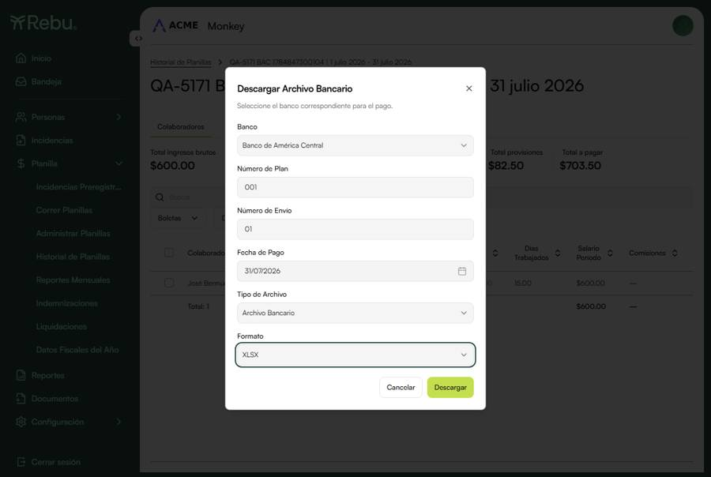

Reporte de Automatización E2E
Release v15.3.1
📅 24 jul 2026
·
🌿 REBU-5171
·
🌐 Dev
·
🔗 app-rebu-portal-dev · monkey (co.30)
🤖 Automatizados 10
📋 Manuales 2
ID Caso de prueba Status
TC-PLA-632 BAC Archivo Bancario XLSX: la fecha de pago se plasma en cols F/G/H (header y filas T)
@api @planilla @descargas
PASS Precondiciones Planilla procesada (dev co.30) con colaborador banco = Banco de América Central (id 6), cuenta 9 díg. Pasos Generar archivo: bankFileFormat:0 (Archivo Bancario), fileExtension:0 (XLSX), paymentDate:"2026-07-31". Parsear el XLSX. Resultado obtenido Fila header (B) y detalle (T) con F=2026, G=07, H=31 (la fecha de pago). Status 200, spreadsheetml. ✅ Planilla 🧾 entry 1532 · empresa 30 (dev) · BAC · período 01/07/2026-31/07/2026 Evidencia ⬇️ archivo-bancario-bac.xlsx (generado) Status PASS
TC-PLA-633 BAC Archivo Bancario PRN: fecha AAAAMMDD (header) y {seq}+AAAAMMDD (filas T)
@api @planilla @descargas
PASS Precondiciones Reusar la planilla BAC de TC-PLA-632. Pasos Generar con fileExtension:1 (PRN), misma paymentDate. Leer el texto de ancho fijo. Resultado obtenido Header con 20260731 ; fila T con 1 +20260731 (secuencia+fecha). ✅B000100001 20260731 53850 1
T000100001531339871 120260731 53850 01/07/2026-31/07/2026 Jose Bermudez Planilla 🧾 entry 1532 · empresa 30 (dev) · BAC · período 01/07/2026-31/07/2026 Evidencia ⬇️ archivo-bancario-bac.prn (generado) Status PASS
TC-PLA-634 BAC UNI XLSX: la fecha de pago se plasma en cols F/G/H
@api @planilla @descargas
PASS Precondiciones Reusar la planilla BAC de TC-PLA-632. Pasos Generar con bankFileFormat:1 (Archivo Bancario UNI), fileExtension:0 (XLSX). Resultado obtenido Header y detalle con la fecha de pago (2026/07/31). Filename "Archivo BAC UNI - …". ✅ Planilla 🧾 entry 1532 · empresa 30 (dev) · BAC · período 01/07/2026-31/07/2026 Evidencia ⬇️ archivo-bancario-uni.xlsx (generado) Status PASS
TC-PLA-635 BAC UNI PRN: fecha AAAAMMDD / {seq}+AAAAMMDD
@api @planilla @descargas
PASS Precondiciones Reusar la planilla BAC de TC-PLA-632. Pasos Generar con bankFileFormat:1, fileExtension:1 (PRN). Resultado obtenido Header con 20260731; filas T con {seq}+20260731. ✅ Planilla 🧾 entry 1532 · empresa 30 (dev) · BAC · período 01/07/2026-31/07/2026 Evidencia ⬇️ archivo-bancario-uni.prn (generado) Status PASS
TC-PLA-636 La fecha del archivo = fecha de pago ingresada, NO la fecha de descarga (regresión central)
@api @planilla @descargas @regression
PASS Precondiciones Reusar la planilla BAC de TC-PLA-632. Pasos Generar con paymentDate 2026-07-31 (distinta al día de descarga). Leer F/G/H. Resultado obtenido El archivo muestra 2026/07/31 (la fecha de pago), no la fecha de descarga (que solo aparece en el nombre del archivo). ✅ Planilla 🧾 entry 1532 · empresa 30 (dev) · BAC · período 01/07/2026-31/07/2026 Evidencia ⬇️ ver archivo (F/G/H = fecha de pago) Status PASS
TC-PLA-637 Fecha de pago posterior al período se refleja tal cual
@api @planilla @descargas @edge-case
PASS Pasos Generar con paymentDate 2026-08-15 (posterior al período de julio). Resultado obtenido El archivo muestra 2026/08/15. ✅ Planilla 🧾 entry 1532 · empresa 30 (dev) · BAC · período 01/07/2026-31/07/2026 Status PASS
TC-PLA-638 Edge: fecha en borde de año (01/01) sin off-by-one por timezone
@api @planilla @descargas @edge-case
PASS Pasos Generar con paymentDate 2027-01-01 (XLSX y PRN). Resultado obtenido XLSX F=2027,G=1,H=1; PRN 20270101. NO se desplaza a 2026/12/31 por zona horaria. ✅ Planilla 🧾 entry 1532 · empresa 30 (dev) · BAC · período 01/07/2026-31/07/2026 Status PASS
TC-PLA-639 Modal: "Fecha de pago" es requerida → resalta rojo + mensaje, no genera (AC2)
@ui @planilla @descargas @validacion
PASS Precondiciones Planilla BAC (dev co.30) + sesión UI (monkey). Pasos Abrir Descargar Archivo Bancario, banco = Banco de América Central, completar Nº Plan y Nº Envío, dejar Fecha de Pago vacía, presionar Descargar. Resultado obtenido El campo Fecha de Pago resalta y muestra "La fecha de pago es requerida"; NO se dispara el POST de generación. ✅ Planilla 🧾 entry 1532 · empresa 30 (dev) · BAC · período 01/07/2026-31/07/2026 Evidencia Modal BAC con el campo Fecha de Pago

Status PASS
TC-PLA-640 Modal: al corregir la fecha, el resaltado de error desaparece de inmediato (AC5)
@ui @planilla @descargas @validacion
PASS Pasos Con el error visible (TC-639), elegir una fecha válida en el datepicker. Resultado obtenido El resaltado rojo y el mensaje desaparecen de inmediato. ✅ Status PASS
TC-PLA-641 Modal: el campo "Fecha de Pago" aparece después de "Número de Envío" (AC1)
@ui @planilla @descargas
PASS Pasos Abrir el modal BAC y leer el orden de los campos. Resultado obtenido Orden: Banco, Número de Plan, Número de Envío, Fecha de Pago , Tipo de Archivo, Formato. ✅ Status PASS
ID Caso de prueba Status
TC-PLA-642 Liquidaciones: el archivo bancario BAC incluye la fecha de pago. Fase 2 — pendiente confirmar que el modal de liquidaciones BAC tiene el campo + armar data de liquidación en dev.
⏭️ TC-PLA-643 Finiquitos/Indemnizaciones: el archivo bancario BAC incluye la fecha de pago. Fase 2 — mismo motivo que TC-PLA-642.
⏭️
Rebu Automation Suite · Generado el 24 jul 2026 · Rama REBU-5171 · Entorno Dev (monkey, co.30)